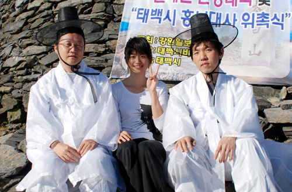

李昌镐的拍拖令黑白世界从此多了最棒的一抹玫瑰色
#1 李昌镐的拍拖令黑白世界从此多了最棒的一抹玫瑰色作者：竹子 发表时间：2008-11-28 18:59:12
李昌镐要结婚了？对于世界围棋界，这条新闻的重要性恐不亚于中日韩三国在贴目规则上达成了一致！
女主角名曰李道润，现年22岁，身高1米68，貌端体健，性格开朗，在韩国明智大学拿下围棋专业研究生学位后，目前供职于韩国棋院网站乌鹭网，司职围棋专业记者。这是韩国棋院事业部课长田在现对《体坛周报》记者谢锐先生透露的讯息。而韩国SportsKan网站则在采访当事人后将其公诸天下。
其实二李拍拖已有些时日，不过石佛历来行事低调，二人的交往目前仅限于“十天看一场电影”的频率和热度。
二人是如此评价对方的：
他说，“她的阳光气质非常合我的心意。”
她说，“我喜欢他身上的那种慈祥感和诚实感。”
在接受采访时，他称“她”为“道润”，她称他为“李国手君”，瞧瞧，瞧瞧，多围棋，多韩国！
全世界关注围棋的人几乎都在为李昌镐的终身大事操心，据传两人有可能在明年初结婚。
前些年李昌镐独步天下时，对手们很郁闷，“这厮不食人间烟火，怪不得官子收得那么冷酷。要是他能遭遇一点爱情，也许……”
这几年李昌镐状态下滑后，同行间默默认同了这个观点，“他是该找个女朋友了，他终归是个活人而不是神仙。李世石不就是结婚后把李昌镐从神坛上赶下来的吗？”
以李昌镐的传奇色彩和与生俱来的低调性格，绯闻之于他像个甩不掉也抓不到的幻影。早年间，韩国棋迷公推外形靓丽的韩国围棋节目主持人韩海苑二段最适合问鼎“镐太”，可惜皇帝不急；后来，日本棋界美貌不可方物的梅泽由香里五段也被扯上了瓜葛，但事情最终以梅小姐下嫁给J联赛一个守门员无疾而终；最靠谱的绯闻当推中国棋界小家碧玉型美女毛昱衡（原名毛佳君），有旅韩求学背景的她曾在一个电视台举办的受让先“性别大战”中与李昌镐手谈，结果石佛巧妙设下“四劫连环”的千古名局，双方和棋收场，轰动棋坛。大家当时无不认为，这是石佛一生中干过的最浪漫的事。但一盘棋终归左右不了一段情，否则单身的人就不用去泡吧，改下围棋好了。
李昌镐如最终能与李道润小姐结成秦晋之好，至少有如下几层积极意义：
1、天下棋迷心中最顽固的一个结终于得解，善莫大焉；
2、这将是对围棋界颇为盛行的“姐弟恋”的一次修正，李昌镐大李道润11岁，男棋手都是长不大的孩子？石佛可以说不；
3、体育界男名人为何不能与女记者拍拖？多梅内克？米卢？杜伊？不，李昌镐会比你们走得更远，后半盘天下无双的石佛真的打算把后半生交给女记者呢；
4、围棋是残酷的，围棋也是美妙的。李昌镐的拍拖令得黑白世界从此多了最棒的一抹玫瑰色。
#2 Re:李昌镐的拍拖令黑白世界从此多了最棒的一抹玫瑰色作者：潇洒 发表时间：2008-11-28 19:48:46
 这是件大快人心的事啊
这是件大快人心的事啊#3 Re:李昌镐的拍拖令黑白世界从此多了最棒的一抹玫瑰色作者：nara 发表时间：2008-11-28 22:21:20

找了两张照片,感觉两个人反差还蛮大的,女的很阳光很爱笑,男的好象永远就那个冷酷的表情.
不知道最后会是怎么样的结果.总之,祝福他们了.
［ 孤竹 于 2008-11-29 13:52:35 时奖励此帖[金币加 20 威望加1］